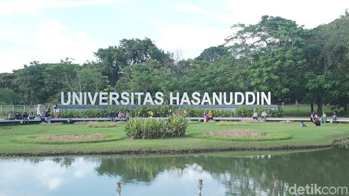

FMIPA Universitas Hasanuddin
Introduction
Egypt

Universitas Hasanuddin adalah salah satu perguruan tinggi negeri terbaik di Indonesia.
PTN ini tentunya memiliki beragam fakultas dan jurusan yang tentunya dapat dipilih
untuk melanjutkan pendidikan. Salah satu fakultas tersebut adalah FMIPA.
Fakultas MIPA Universitas Hasanuddin berdiri pada tanggal 17 Agustus 1963. Awalnya, FMIPA diresmikan dengan nama
Fakultas Ilmu Pasti dan Ilmu Pengetahuan Alam (FIPPA). Di awal pembentukannya, FMIPA terdiri atas empat jurusan, yaitu
Matematika, Fisika, Kimia, dan juga Biologi. Hingga saat ini, FMIPA memiliki delapan jurusan, yaitu
- Matematika
- Aktuaria
- Sistem Informasi
- Statistika
- Fisika
- Geofisika
- Kimia
- Biologi
VISI
- Menjadikan Fakultas Matematika dan Ilmu Pengetahuan Alam sebagai pusat pengembangan pendidikan tinggi Sains Alamiah Dasar
dengan dukungan matematika yang dapat menopang perkembangan ilmu pengetahuan teknologi dan seni untuk kesejahteraan manusia
MISI
- Melaksanakan pendidikan sains alamiah dasar dengan dukungan matematika yang berlandaskan pada keimanan dan ketaqwaan untuk
kemaslahatan manusia dan pelestarian lingkungan
- Melaksanakan pendidikan untuk menghasilkan lulusan yang memiliki kapasitas, karakter dan kompetensi ilmu, intelektualitas serta pembelajar yang adaptif dan kreatif
- Melaksanakan penelitian sains alamiah dasar dengan dukungan matematika dan menerapkan hasilnya melalui pemberdayaan masyarakat untuk memanfaatkan sumberdaya secara
berkesinambungan serta pelestarian lingkungan